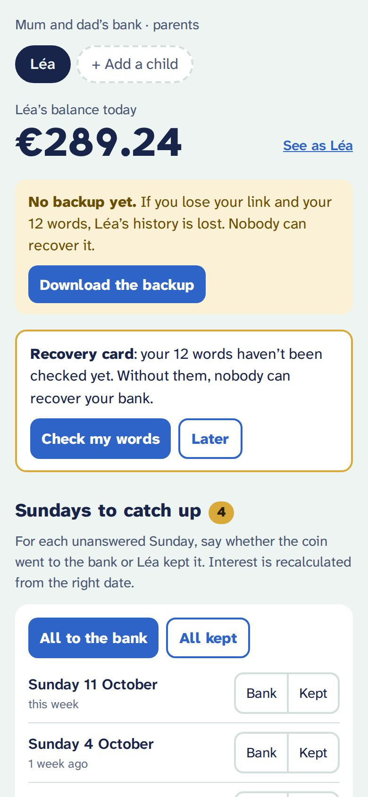
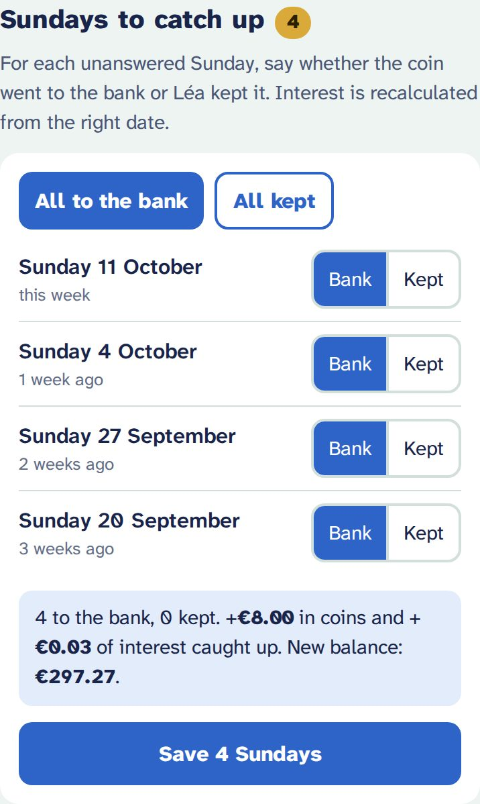
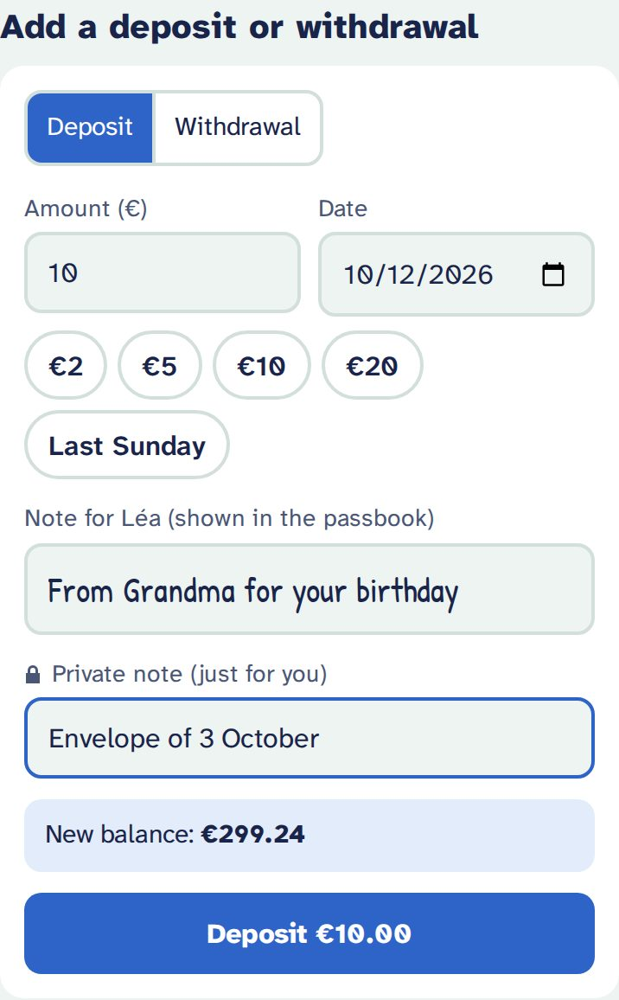
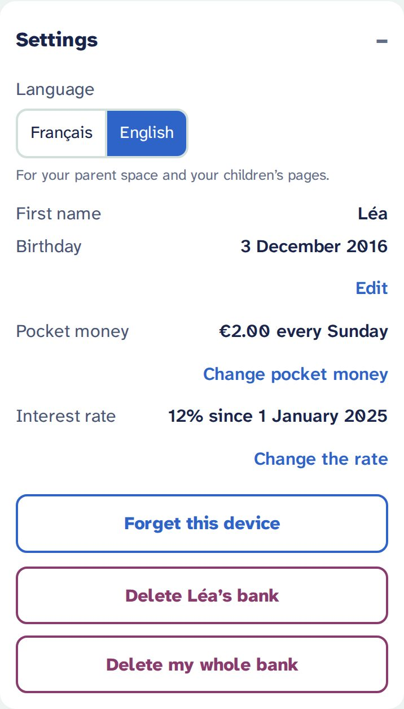
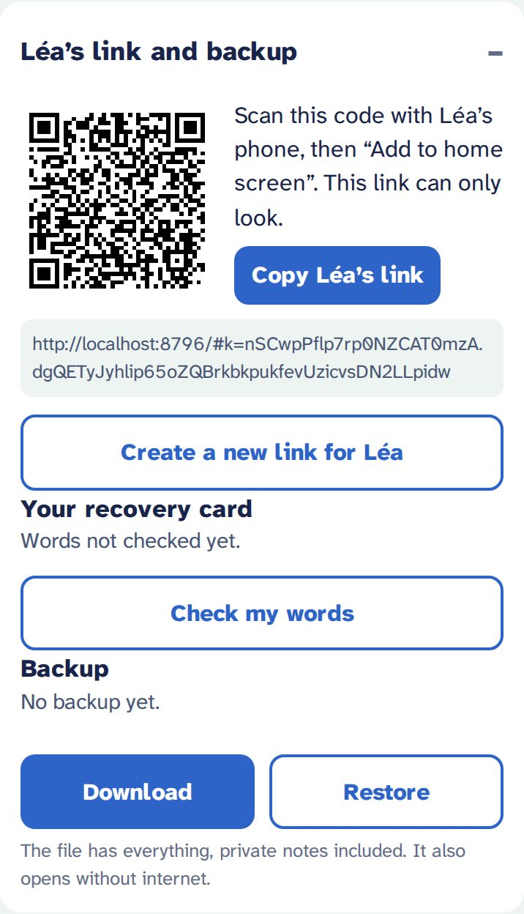

Create your child’s bank
You have an invitation, or you tapped « Créer ma banque » on your admin page. Here are the four steps, then everything you do afterwards, week after week.
Do it on the phone you will use as a parent: it will remember your bank. Allow five minutes, and a printer if you have one (otherwise paper and a pen). The creation screens are in French; each button is translated below.
1. The form
- Prénom (first name): the one your child will see (“Hello Léa!”). A nickname works too.
- Anniversaire (birthday, optional): your child’s page shows what they could have “when you turn 10”. Without a date, it talks about “in 6 months”.
- Argent de poche and Jour (pocket money and day): €2 every Sunday, for example. These are the “Sunday coins” your child puts in the bank, or keeps.
- Taux d'intérêt (interest rate): 12 % a year by default. Generous on purpose: enough for a child to see the money grow. You can change it later, from a given date.

Already have a spreadsheet (Google Sheets)?
Choose Depuis un tableau (from a spreadsheet) and bring the whole history along:
- In Google Sheets: File → Download → Comma-separated values (.csv).
- Tap Choisir le fichier CSV (choose the CSV file). The file is read on your phone: it is sent nowhere.
- Check « Colonnes lues » (columns read): the date column, the amount column (deposits and withdrawals, not the balance!) and the comment column. Change them if needed.
- Read the summary: rows, Sundays banked, moves, Sundays “to catch up”, and today’s balance.
Good to know: dates written 05/01/2025, 2025-01-05, 01/Mar/2025 or 5 Jan 2025 are understood. Rows dated after today (a sheet planned ahead) are left out. Comments become private notes, which your child never sees.

2. The recovery card
Right after creating the bank, the app shows 12 words. They are the only key to your bank: if you lose your phone and these words, nobody can recover the bank, not even the host.
- Tap Imprimer la carte (print the card): one page with the 12 numbered words, a QR code that opens your parent space, and the date. No name on it.
- No printer? Copy the 12 words in order, on paper.
- Keep the card with the piggy bank, or with your important papers. Not as a photo on your phone.
Then J'ai noté mes mots (I wrote my words down): the app asks for 3 random words to check. Je le ferai plus tard (I’ll do it later) exists, but the app reminds you every month.
The words are shown in French at first. Restoring accepts the French or the English version of the same words, so the card stays valid after you switch the bank to English.

3. Your child’s link
The app shows your child’s link and QR code. This link can only look: nothing can be changed with it.
- Scan the QR code with your child’s phone (or tablet), or send them the link.
- Add the page to the home screen, like an app:
- iPhone, iPad (Safari): Share button → Add to Home Screen.
- Android (Chrome): menu ⋮ → Add to home screen or Install app.
Several children on one device? Open each link once: the app will ask who is looking (« Qui regarde sa banque ? »).

4. Your parent space, and switching to English
Tap Ouvrir mon espace parent (open my parent space). First, switch to English if you like: Réglages → Langue → English (settings, language). It changes your parent space and your children’s pages.
This phone remembers your bank: to come back, open your bank’s address followed by /parent (bookmark it). Your parent link is never shown as text: on another device, scan the QR code on your recovery card, or choose Restaurer avec mes 12 mots (restore with my 12 words) on the welcome page.
At the top: today’s balance, one tab per child, See as Léa to see exactly their page, and the reminders (backup, recovery card) while they are useful.

Then, every week
Sundays to catch up
Each pocket-money day lands in “Sundays to catch up”. For each one, tap Bank (the coin went to the bank) or Kept (your child kept it). Forgot a few weeks? No problem: catch up whenever you like, or all at once with All to the bank or All kept. Interest is recalculated from the right date.
Kept coins are not a reproach: they only feed your child’s “What if you had saved every coin?” chart.

Deposits and withdrawals
A present from Grandma, coins found, a purchase: “Add a deposit or withdrawal”.
- Date: today by default. You can date it in the past: the app recalculates the interest and tells you how much it changes.
- Note for your child: they see it in their passbook, handwritten.
- Private note: just for you. It never reaches your child’s page.
- A withdrawal can never make the account negative, even dated in the past.
To correct something, tap a line in the Passbook: you can edit or delete it. A Sunday can switch between “bank” and “kept”, or go back to “to catch up”.

Settings
- Language: French or English, for your space and your children’s pages (no need to touch their phones).
- First name, birthday.
- Pocket money and interest rate: they change from a given date. The past never changes.
- Forget this device: on a borrowed or shared phone.
- Delete one child’s bank, or your whole bank (a backup is offered first).
Another child? + Add a child, at the top: each has their own link.

The link and the backup
- Your child’s QR code and link, for a new device.
- Create a new link for Léa if a phone is lost or the link was shared by mistake: the old one stops working.
- Your 12 words, to see them again, print or check them.
- Download a backup, or Restore one.

Backups
A banner reminds you while there is no backup, after 30 days, or after 5 changes. Download the backup creates a file such as banque-lea-2026-10-12.json.
- Keep it off your phone: your cloud, a USB stick, an e-mail to yourself. If your phone allows it (often on Android), Share the backup sends it directly.
- The file holds everything, private notes included, and is not encrypted: treat it as a personal document.
- It opens even without internet: on the welcome page, Ouvrir une sauvegarde (open a backup). A whole bank can be recreated from it, with an invitation.
New phone, lost phone
| Your new phone | Scan the QR code on your recovery card, or Restaurer avec mes 12 mots (restore with my 12 words) on the welcome page. Everything is there. |
|---|---|
| Your lost phone | Same thing on another device. Your bank is unreadable to anyone without your link or your words. |
| Your child’s lost phone | In your space: Create a new link for Léa, then open the new link on the new device. |
| Words and link both lost | Only a backup can save the history: Ouvrir une sauvegarde, then Créer une banque à partir de cette sauvegarde (create a bank from this backup). You need an invitation. |
Don’t forget
- My 12 words are on paper, kept with the piggy bank or my important papers.
- I checked my words (3 words asked by the app).
- I downloaded a backup and keep it off my phone.
- My child’s link is on their home screen.
- My parent space address (…
/parent) is in my bookmarks.